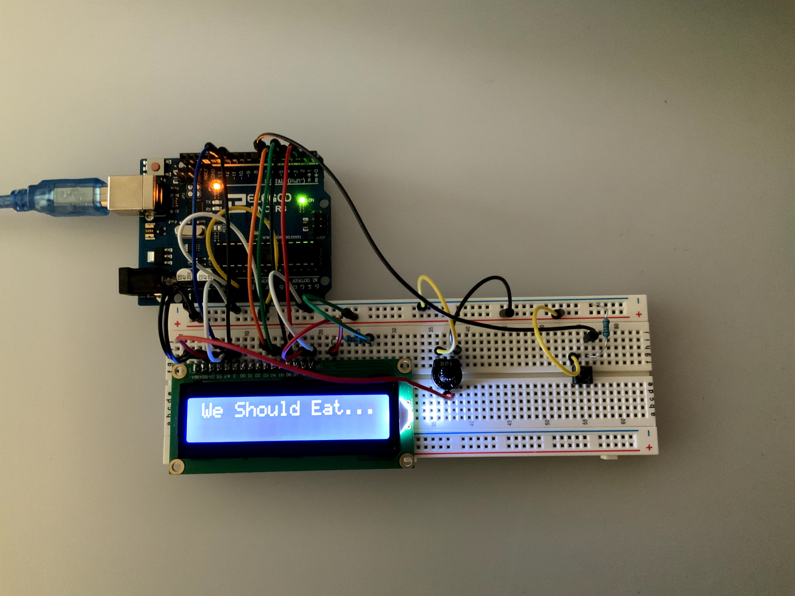

Here is a look at some of my Arduino Projects.
This very simple project is comprised of an UNO, LCD, and button. On each button click the device gives the user a suggestion on where they should eat. This project was inspired by the countless times my girlfriend and I have been at an impass on where to eat due to our indecicesvness. Problem Solved!
